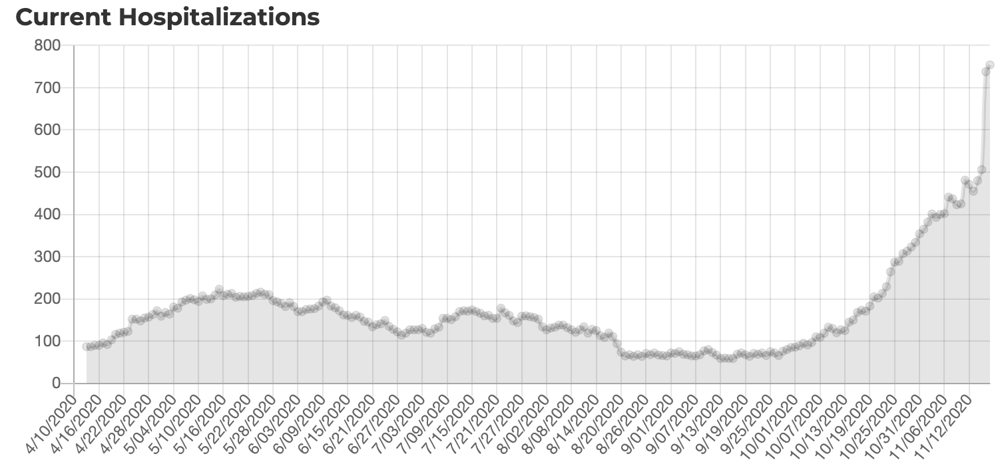

[NM] Shift timeseries by a day and patch a few values that do not match state reporting date
** State or US**: New Mexico ** Problem** NM updates their dashboard late during the day, so up until now, we were capturing values reported on the previous day. Starting today (Nov-18, 2020) we will be capturing the values NM publishing on the day of their publish, such that our dating of the data matches the states dating. For this, we will shift the entire time series by 1 day.
NM publishes historic time series, available at: https://cvprovider.nmhealth.org/public-dashboard.html (clicking "Show Historical Statewide Data). We’ll use this to also patch a few days and fill missing values at the beginning of the series.
Comments
Yeah, this is a going to be a separate issue (at least a note). Since they didnt backfill their historic timeseries of hospitalizations (+ it matches what we’ve been capturing in the past), I’ll use their history for the small fixes for days where we’ve been capturing the “correct” day.
Patching the time series for the few days that were now reporting the future.
Multi-edit tool-PRODUCTION - NM-reb-20201118.csv.txt Multi-edit tool-PRODUCTION - NM-reb-20201118_post.csv.txt
For what it’s worth, NM also changed their methodology for collecting hospitalization data which resulted in a large increase (~40%) in reported values this week. (https://www.santafenewmexican.com/news/coronavirus/new-mexico-sets-daily-record-for-covid-19-cases-deaths/article_7c7cfb58-2929-11eb-b562-a39d722bccdf.html).

I don’t have an obvious solution on how to rectify this disconnect in the timeseries, but at the very least I think it’s worth adding a note at https://covidtracking.com/data/state/new-mexico.